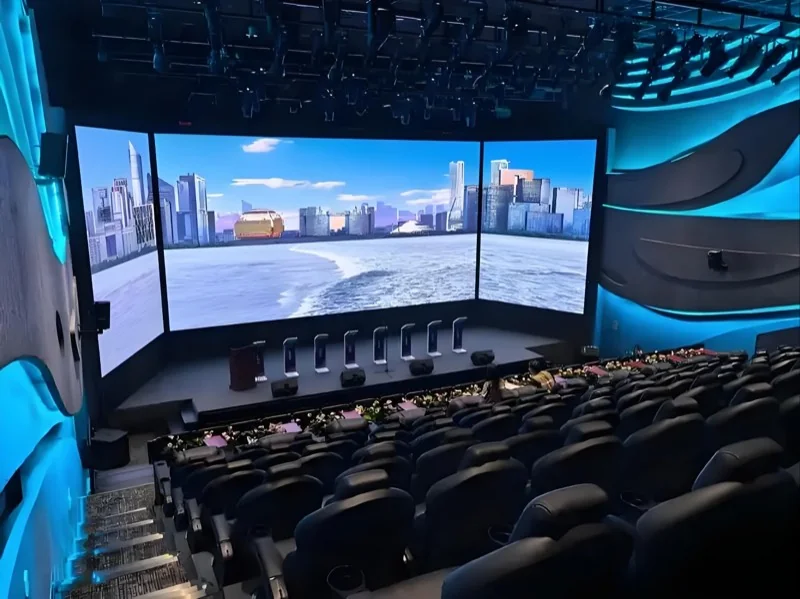

What is an LED cinema screen? It is a fine-pitch LED wall used as the primary picture in a cinema auditorium, a preview theatre, a corporate screening room or a similar dark house, in place of a projector and a reflective screen. The buying decision is not a drop-in swap of one projector model for another. It is a new surface, with its own luminance, colour, contrast, pixel pitch, dimming, service access and, often, a different relationship to the room’s audio and lighting. This guide is for exhibitors, cinema fit-out contractors, post-production and preview theatres, and corporate or institutional buyers who are writing that specification.
It does not repeat the general comparison of LED and projection, which is covered in our LED versus projection guide, or the broader theatre and performance brief in the theatre and performance guide. Contrast measurement and specification language are in the contrast ratio guide. Pitch and viewing angle, once the seating is known, follow the viewing-distance and viewing-angle guides. What follows is the cinema-specific list: luminance and uniformity, colour evidence, black level in a dark house, and what must be confirmed on the quotation rather than inferred from a product page.
A projector throws an image onto a screen; an LED wall emits the image. That changes three practical things before any brand or pitch is chosen. First, the picture does not depend on a lamp or a laser staying in tolerance, and there is no throw distance to protect, so a shallow room or a low ceiling can become possible where a projector would not fit. Second, the wall has mass, depth, heat and a service method, so the proscenium, the structural support and the rear or front access have to be designed as part of the auditorium, not added after the seats are in. Third, luminance, colour and black level are properties of the wall and its calibration, not of a reflected highlight on a painted screen, so the acceptance tests have to be written for a self-emissive surface.
Those are advantages only if the specification says what the wall must do in that room. A fine-pitch indoor wall that is excellent in a bright lobby can be the wrong starting point for a dark auditorium if it cannot be dimmed cleanly, if the black level is high, or if the colour evidence is a gamut number rather than a cinema-acceptance test.
Cinema and preview rooms are dark houses. The useful luminance is the level at which the wall will actually be run, plus the uniformity across the face, not the maximum brightness published for a bright indoor space. Theatrical projection has long used a reference luminance at screen centre, and HDR cinema programmes use different targets. This guide does not treat any one number as a product specification. The RFQ should name the standard or the house practice you are designing to, the target luminance and the uniformity you will measure, and it should ask for the dimming range of the exact module on offer.
That last point matters for the series Asia Vision publishes. The flagship RH-PRO COB series lists a brightness of 800–1200 cd/m², with P0.78 / P0.93 / P1.25 / P1.56, ≥7680 Hz refresh, contrast ≥25,000:1, viewing angle 178° horizontal and vertical, and a no-backshell-style fine-pitch COB build. COB CV-PRO publishes 800 cd/m² at P0.9375 / P1.25 / P1.5625 / P1.875. Those published maxima are higher than a conventional theatrical reference level. In a dark auditorium the wall will almost certainly be run well below the published peak. Ask, on the quotation, how the offered module is dimmed to the target luminance, how grey-scale and colour hold at that level, and how uniformity is measured after dimming. Do not assume that a high published peak is a problem, and do not assume that it is automatically cinema-ready either.
M-PRO publishes 800 cd/m² on a 16:9 cabinet at P1.25 / P1.56 / P1.87, with SMD or GOB and ≥3840 Hz. It is a strong starting point for a meeting or presentation room. For a true cinema or colour-critical preview theatre, treat it as a possible candidate only after the dimming, contrast and colour-evidence questions have been answered on the quotation.
Figure 1 shows a seating-room LED wall with side returns, the kind of wrap some preview theatres and branded auditoria use. A cinema specification still has to state luminance, colour evidence and pitch from the front row, not only the width of the wall.

Two documents are easy to confuse in a cinema tender, and they are not interchangeable.
Write the RFQ so that bidders must say which of the two they are offering. If you need a named cinema certification, name it and ask for the evidence, the covered model and the configuration. If you need the wall to be graded and accepted to a house colour practice (for a preview theatre, for example), say what that practice is and how it will be measured. Asia Vision does not publish a DCI cinema-system certificate on the product pages; any such requirement has to be raised at quotation stage so we can say what is available for the offered configuration.
Calibration and batch matching still apply. A cinema wall is a large, dark-room surface: drift between cabinets is more visible than in a bright lobby. Ask how the wall is calibrated as one canvas, how often it is re-checked, and how a replacement module is matched. Our contrast and colour-related guides cover the measurement language; the cinema add-on is that those measurements are taken at the intended show luminance, not only at the published peak.
In a dark house, black level is the specification that audiences describe as “like cinema” or “like a bright panel in a dark room.” RH-PRO publishes a contrast ratio of ≥25,000:1; COB CV-PRO and M-PRO publish 800 cd/m²-class indoor figures, with M-PRO listing ≥8,000:1. Contrast ratios are only comparable if you know whether they are full-screen on/off figures, checkerboard figures, or some other method, and they move as soon as there is ambient light in the room. Specify the measurement method, require a measurement at the intended show luminance, and control house lights, exit signs and aisle lighting in the same acceptance test. A wall that meets a paper contrast figure can still look grey if the auditorium lighting was not part of the test.
CV-PRO’s product page lists home cinema among the close-view rooms it is built for, alongside conference and exhibition use, and it is not intended for outdoor use. That is an application note, not a cinema-certification claim. For a commercial auditorium or a colour-critical preview theatre, use it as a starting series and confirm dimming, contrast method and colour evidence on the quotation.
Figure 2 shows a broadcast studio with a colour-critical LED environment in a controlled dark space. It is not a cinema, but it is the same family of problem: the wall has to hold colour and black level under the lighting you actually run.

Set the pitch from the nearest seat, not from the back row and not from a “4K screen” label. A cinema or preview theatre often has a short front-row distance relative to the width of the wall, which is why sub-1 mm and low-1 mm pitches appear in this conversation. RH-PRO publishes pitches down to P0.78 and P0.93; CV-PRO publishes P0.9375 among its options. Those are the published starting points for close viewing. The right pitch for a given house still depends on the seating plan, the screen width and the content (feature files, alternative content, or mixed use). Send the seating layout with the enquiry rather than asking for “a 4K LED cinema screen” as a product name. A 4K raster is a pixel count, not a cabinet.
Refresh rate matters if the same room is used for camera capture, esports, or any photographed event. RH-PRO and the COB Z rental family publish ≥7680 Hz; CV-PRO and M-PRO publish ≥3840 Hz. For a dark theatrical house with no cameras, the colour, dimming and black level usually dominate the conversation; if cameras will be in the room, say so and use the camera flicker guide alongside this one.
An LED cinema wall occupies a volume that a projection screen does not: cabinets, a structure, maybe a service void, and heat that has to be taken out of a quiet auditorium. Ask for the depth of the offered cabinet, the front or rear service method, the acoustic effect of the wall (do not assume a published acoustic rating — Asia Vision product pages do not state one for these series), and how the loudspeakers sit relative to the picture. If the design needs a perforated or otherwise audio-transparent treatment, or a speaker array around or behind the wall, that is a room design item to confirm on the quotation, not a feature to infer from the cabinet table.
RH-PRO also publishes full redundancy (dual power, dual receiving cards, dual signal path). That is a 24/7 or show-critical feature. A single-auditorium cinema may or may not need it; a multi-use house that cannot go dark mid-programme may. State the uptime expectation rather than copying the flagship build by default. Product pages publish a 3-year warranty and 18-day standard delivery. A cinema-specific calibration, a custom proscenium frame or a certification process is not assumed to sit inside that 18-day figure; ask for the programme on the quotation.
Send the seating plan, the screen opening, the target standard or house luminance, whether a named cinema certification is required, and whether the room is feature-only, a preview theatre, or mixed use. We will usually start from RH-PRO where contrast, fine pitch and DCI-P3 coverage are the published priorities, or from CV-PRO where the page already lists home cinema as a close-view application, and we will confirm dimming, colour evidence and any certification status on the quotation. Start the enquiry through the contact form.
Planning an LED cinema or preview-theatre wall? Send the seating plan, the opening, the target luminance or house standard, and whether a named certification is required, and we will reply with the series and the evidence available for that configuration. Start a project enquiry.